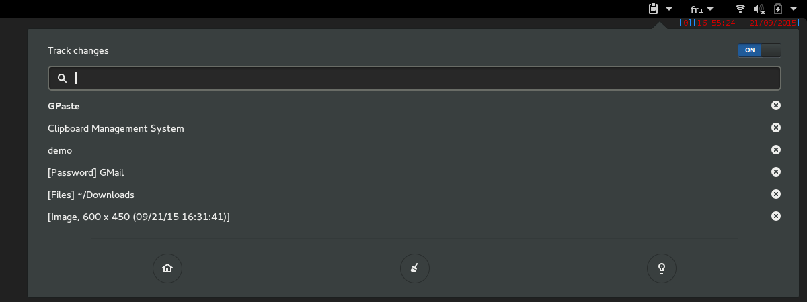
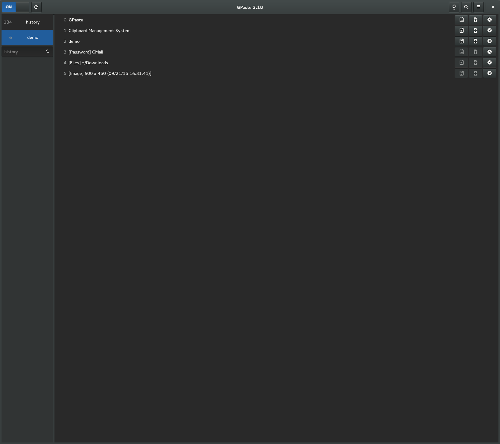
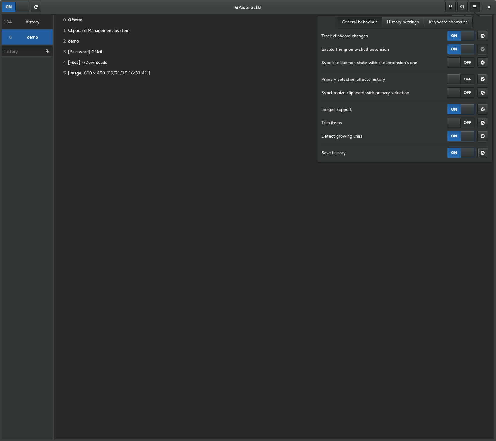
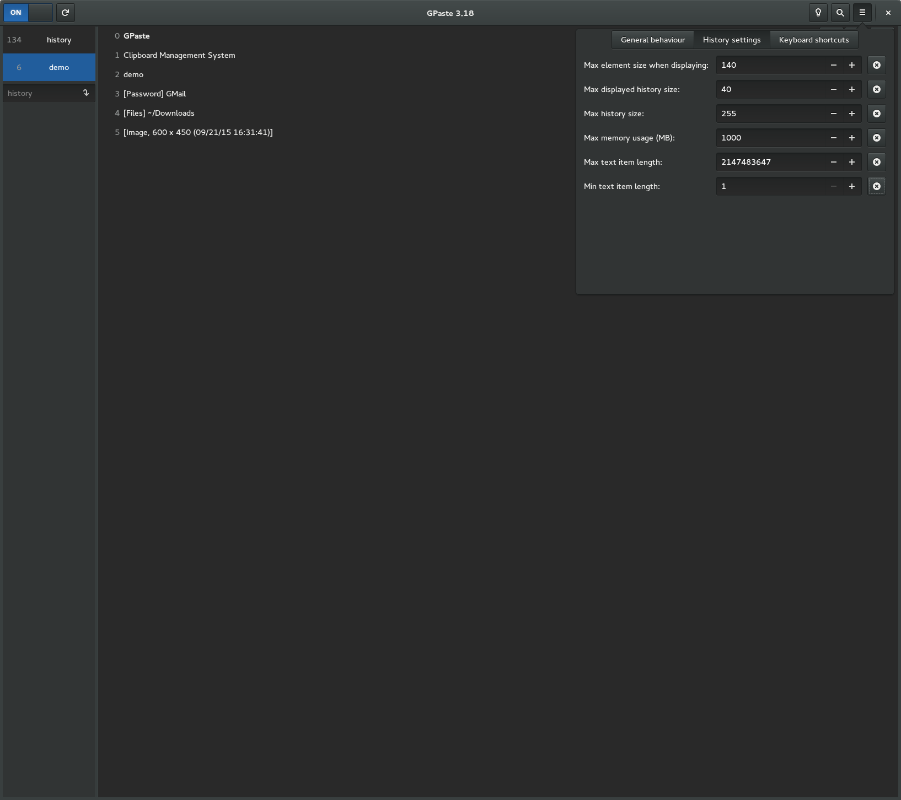
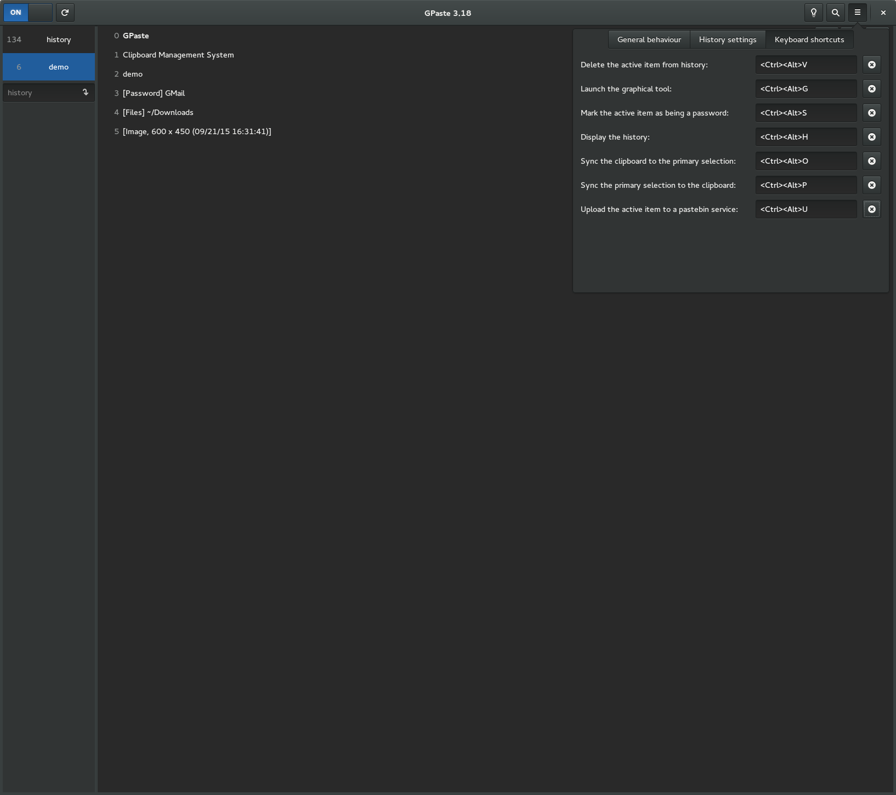

GPaste 3.18 released
by Marc-Antoine Perennou on September 21, 2015
It’s available there, get it while it’s hot!
This release is the first release for using with with GNOME 3.18 with a lot of new features and cleanup.
“163 files changed, 7334 insertions(+), 3159 deletions(-)”
What’s new?
- Warning, this is a big release, with changes in API, yoi might have to kill your old daemon after upgrading
- The “gpaste” cli is now “gpaste-client”. old name can still be enabled with –enable-cli for now
- The “gpaste settings” tool is gone, use the “burger” menu from “gpaste-client ui”
- The graphical tool now allows you to fully manage your histories
- The graphical tool now allows you to restart the daemon
- The graphical tool now allows you to edit an element from the history
- The graphical tool new allows you to upload an element to a pastebin service (requires wgetpaste)
- The graphical tool now displays the size of each history
- The graphical tool now displays the index of each element in the history
- The graphical tool has been slightly redisigned
- A new gnome-shell search-provider is provided by the daemon
- When searching e.g. “42”, the 42nd element from hsitory will be included in search results
- gpaste-client gained a new subcommand: “get-history” to get the name of the current history
- gpaste-client gained a new subcommand: “replace” to replace the content of an item in the history
- Compatibility with gnome-shell 3.18
- The daemon now “works” on wayland using XWayland and gnome-shell 3.18
- The dbus interface name is now org.gnome.GPaste1
- The “Empty” dbus method has been renamed “EmptyHistory”
- The “NameLost” and “ReexecuteSelf” dbus signals are gone
- Three new dbus signals: “DeleteHistory”, “EmptyHistory” and “SwitchHistory”
- The daemon gained new dbus methods: GetItemKind, GetElements, GetHistoryName, Replace
- BackupHistory EmptyHistory and DeleteHistory now take the history as a parameter instead of the current one
- GPasteClient hasn’t the “name-lost” and “reexecute-self” signals anymore
- GPasteClient gained three new signals: “delete-history”, “empty-history” and “switch-history”
- GPasteHistory gained a new “switch” signal
- GPasteHistory now tracks dconf to switch between histories
- A few formerly private constructors and methods are now publicly available
- The way GPaste handles dbus conection and objects have significantly been reworked
- Everything is now handled using 64bits types (the numeric settings have thus been reset and some max values changed)
- A lot of code cleanup and rearchitecturation
- Signals are now properly documented for gobject-introspection and thus bindings
- Various build system cleanups (gobject-introspection and vapigen are now required to build from git
- Shell completion updates
- Translations updates
And don’t forget to run gpaste-client dr aka gpaste-client daemon-reexec after upgrading GPaste to activate new functionalities ;)
You then can run gpaste-client daemon-version to check that the correct daemon is running.
Screenshots
Gnome-shell extension

Graphical tool




Ubuntu application indicator and legacy status icon